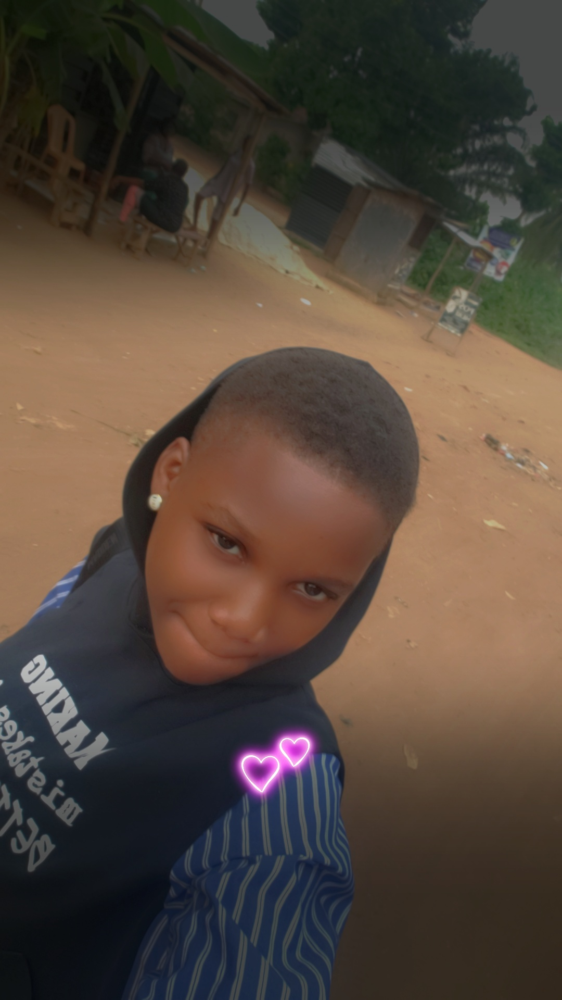

My Designs



Date Of Birth: 01/01
Age: 16 years old
I Am A: Graphic Designer, Web Designer and Web Developer
I am a creative person who enjoys graphic design, web design and web development.
Graphic Design
Web Design
HTML
CSS
Web Development
For Pre-school & Kinder-garten: I attended Hill-City Blossom School
For Nursery: I attended Creative Mind School, because I moved to a new area
Then for My primary & Junior Secodary school: I attended The Novelty Montessori School...A school I can never forget. The Novelty School is a school Located at Edu, Orita.
They take care of their Children, teach them various skills, take them out for excursions, and always prioritises the safety of their students.
My Experience in The Novelty School would be shared on this Website later.In year 2022, I graduated from Junior Secondary School. I then switched to Johtech International School, because Novelty had not built their Senior Secondary School at that time.
Johtech International School is also another School I will never forget, at least not in a hurry. I was made the sports prefect in Johtech International School in the year 2024/2025, because they saw my passion in sporting activities right from when i newly joined the school.
I'd also discuss more of my experiences later...
By October, I'd be resuming as a Fresher at McPherson University A Faith-Based School located at Lagos-Ibadan Express way.
In 100level, I'd be studying Medical Laboratory Science, but I'd Switch to Nursing Science in 200level by God's Grace
My Personal Website
Graphic Design Projects
Web Design Projects
Email: your@email.com